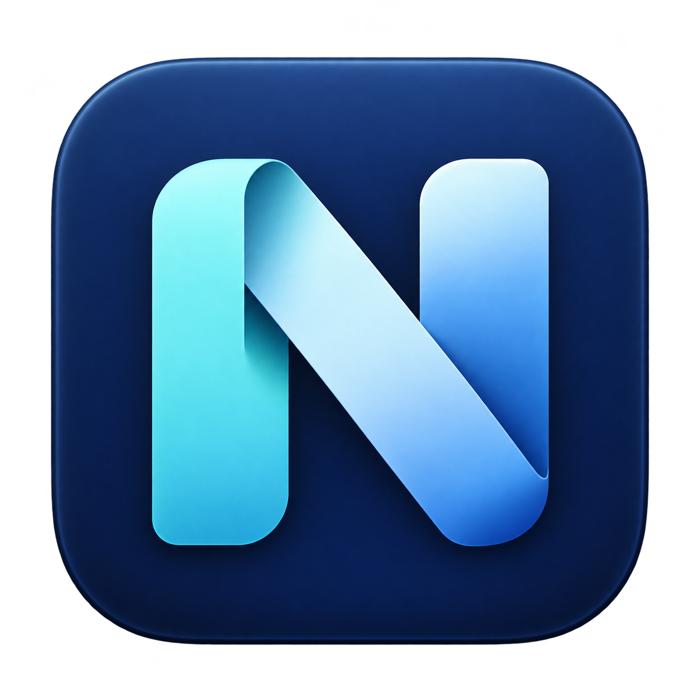

01 / 剪贴板
剪贴板历史
找回之前复制的文字和图片，支持文字搜索和图片预览。可设置保留数量与时间，也能暂停记录或排除指定应用。
T查找之前复制的内容⌕

Nivlet for Mac下载前请留意：当前版本未经过 Apple 公证，首次打开可能被 macOS 拦截。安装方式与限制见下方说明。
需要什么就开启什么，在设置中直接配置，无需编写代码或另外安装 Hammerspoon。
找回之前复制的文字和图片，支持文字搜索和图片预览。可设置保留数量与时间，也能暂停记录或排除指定应用。
用自定义快捷键将窗口移到半屏、三分区或九宫格，支持居中、跨屏移动和恢复原位置，共 29 项操作。
给常用应用设置快捷键，打开或切换时会显示简短提示。支持更换应用、拖动排序，并检查重复应用和快捷键冲突。
例如微信里的链接用 Safari，开发工具里的链接用 Chrome。按来源应用或网站设置规则，未匹配的链接使用你指定的浏览器。部分应用可能无法识别来源。
在菜单栏查看网速，在菜单中查看 CPU、内存等系统信息。为不同应用指定输入法，切换应用时自动切换。
将设置导出为 JSON 文件，换设备时可导入使用。支持中英文与深浅色；每页可保存或取消修改，未保存的页面有标记。
下载并打开 DMG，将 Nivlet.app 拖入“应用程序”文件夹，再打开应用。也可以下载 ZIP，解压后移入“应用程序”。
窗口管理和 Option 直接粘贴需要辅助功能权限。未公证包若被拦截，请查看安装指南，不要全局关闭 Gatekeeper。
点击菜单栏 N 图标打开设置，开启需要的功能，再点击右下角“保存设置”。使用浏览器分流前，还需将 Nivlet 设为默认浏览器。
配置和剪贴板记录保存在本机，不会上传。跨重启保留历史使用本地明文缓存，复制敏感内容前可暂停记录。检查更新、下载安装包和打开网页需要联网。官网不使用分析脚本或追踪 Cookie。
当前版本为 1.0.0 / Build 18，安装包要求 macOS 13.0 或更高版本，包含 Apple Silicon 和 Intel 架构。已在开发者的 Mac 及同机新用户环境测试；Intel、其他 macOS 版本和多显示器尚未完成全面测试。